Twenty things left behindby people who came down before her
Every cave area now has objects left by people who came down before the knitter. They don't do anything and they aren't part of her story. Each one hints at who used the place and what happened to them. Each area has its own theme, so the ledges stop looking alike.
The caves stay dark. Each object gives off a faint cold glow, so you can make out its shape from a few metres away, and your thread's light shows the detail as you walk up. Only two things have real light: a shrine of candles that someone is still keeping lit, and pots of pale mushrooms.
The Throat: a well, then a mine
The caves look too empty. Add more distinction to some platforms, and items that contribute to the lore and the mood, not necessarily the story we are playing.
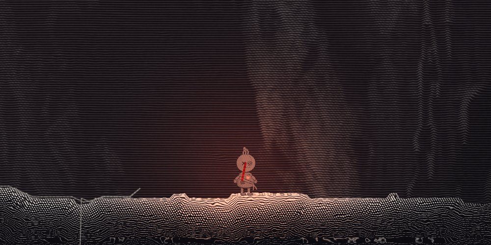
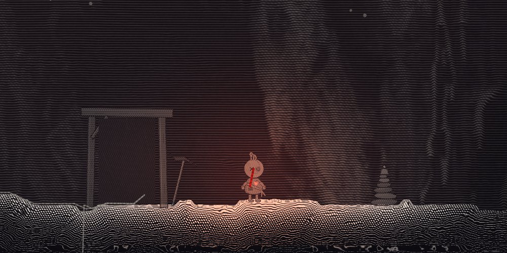
BeforeAfter
Drag the thread to compare
A well windlass stands at the lip of the pit, outside: two posts, a drum wound with rope, a crank, and a frayed rope end hanging slack. The Throat was once the village well.
A wooden bucket lies on its side on the first ledge, its handle snapped, beside a coil of the same frayed rope.
A mine frame of two props and a cap beam stands against the wall of the second ledge, with a black opening behind it and a pick leaning on it. Later, people dug here.
A cairn of flat stones on the same ledge has a tiny knitted cap on top.
A pair of small boots sits on the third ledge, one fallen over.
A cracked miner's lantern lies on the fourth ledge. Rows of tally marks are scratched into the wall above it, four strokes and a slash, like someone counting days.
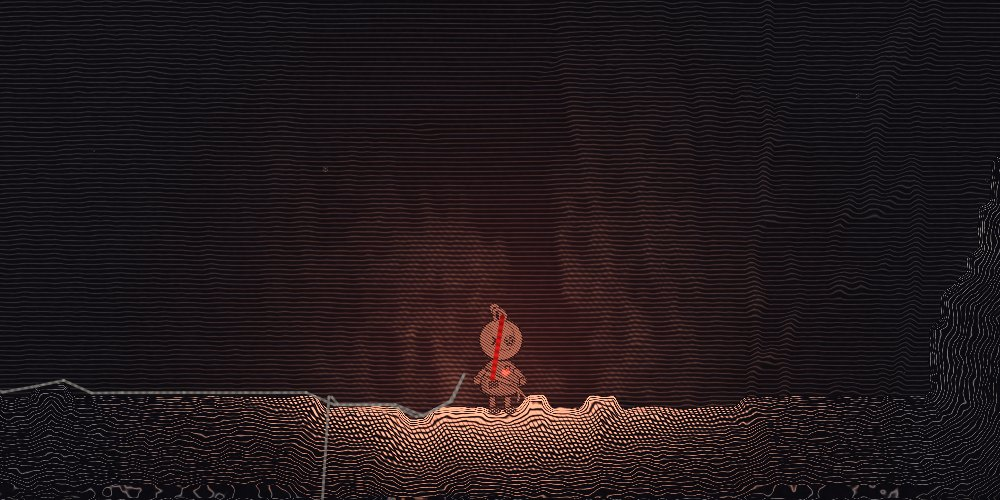
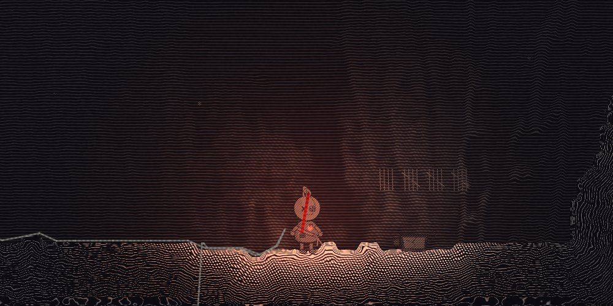
BeforeAfter
Drag the thread to compare
The Root Gardens: somebody tended this
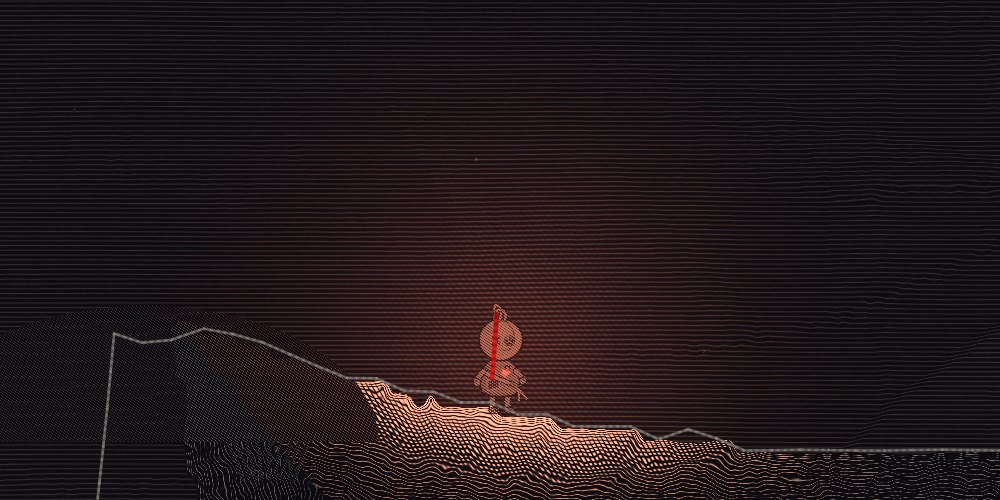
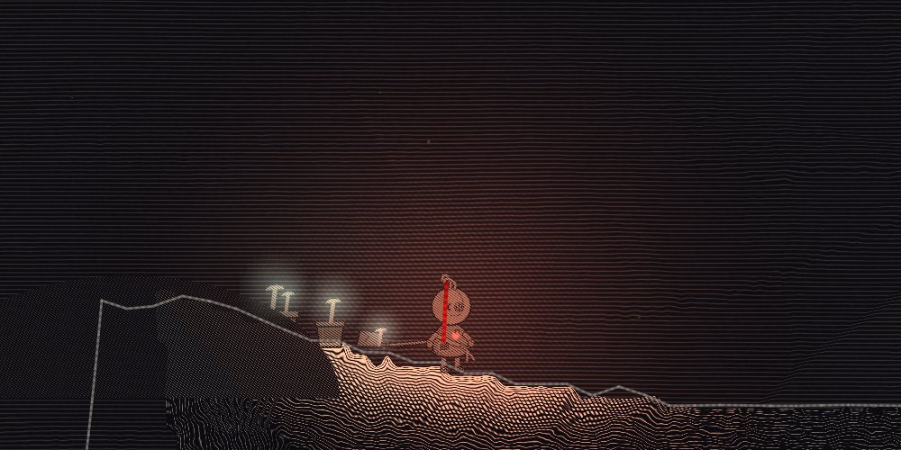
BeforeAfter
Drag the thread to compare
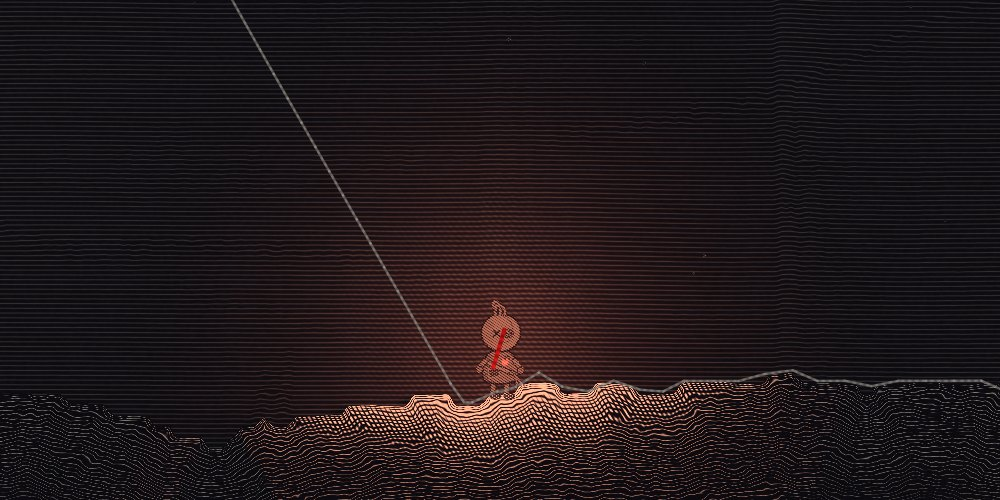
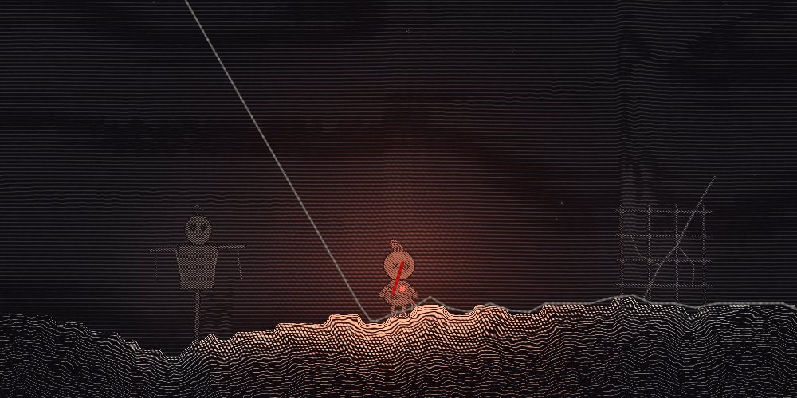
BeforeAfter
Drag the thread to compare
Clay pots of pale mushrooms, one broken on its side, with a hand rake. The mushrooms keep a faint cold glow.
Garden marker sticks in a row of turned earth, each tied with a knot of grey yarn. It's the same grey as her thread.
A yarn scarecrow of crossed sticks with a knitted body and face, two button eyes and rag strips that stir. It stands where the moths gather.
A trellis of sticks lashed with yarn, with pale roots grown right through it, so it has been here a long time.
The Bell Gallery: a chapel to things that ring
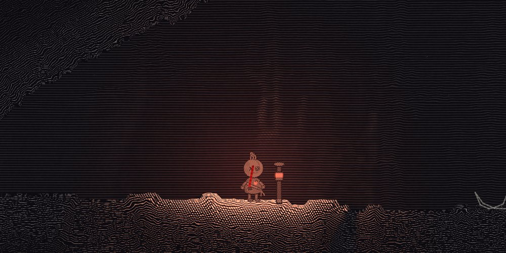
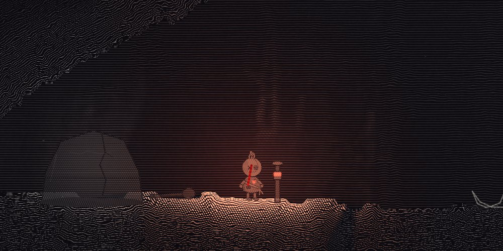
BeforeAfter
Drag the thread to compare
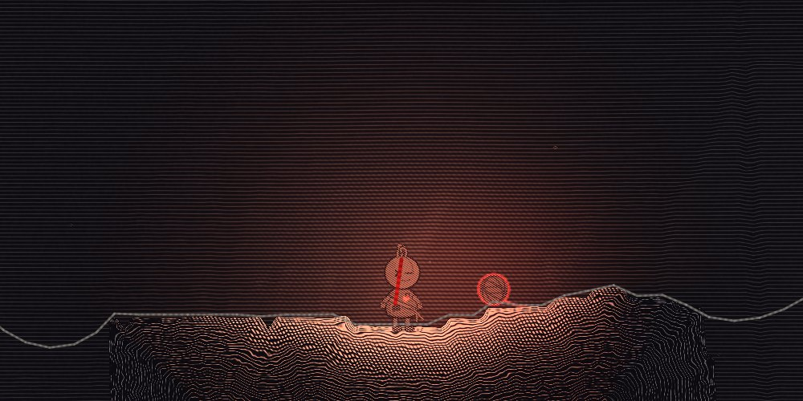
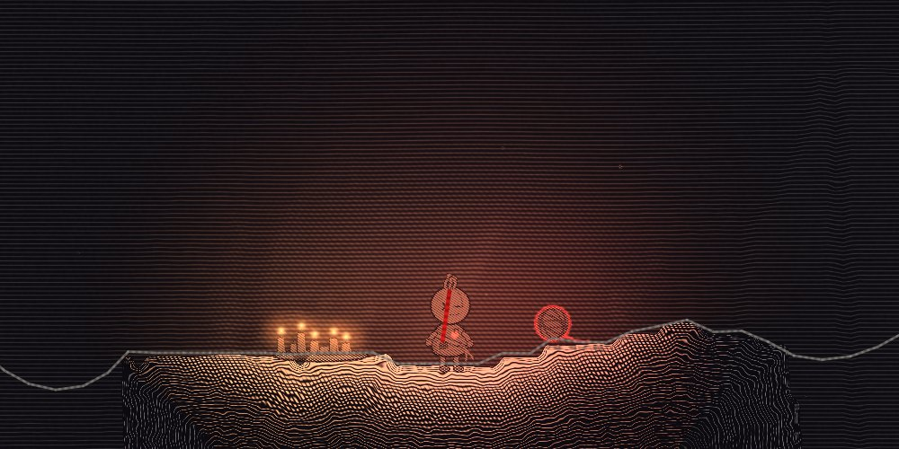
BeforeAfter
Drag the thread to compare
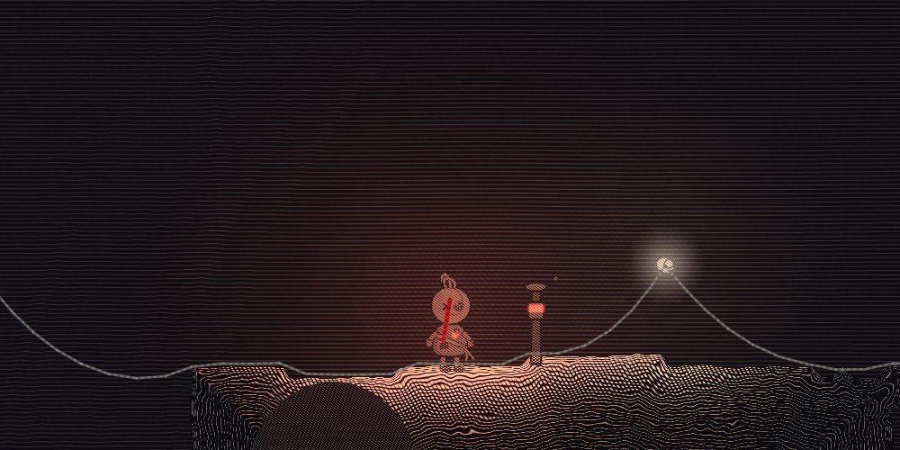
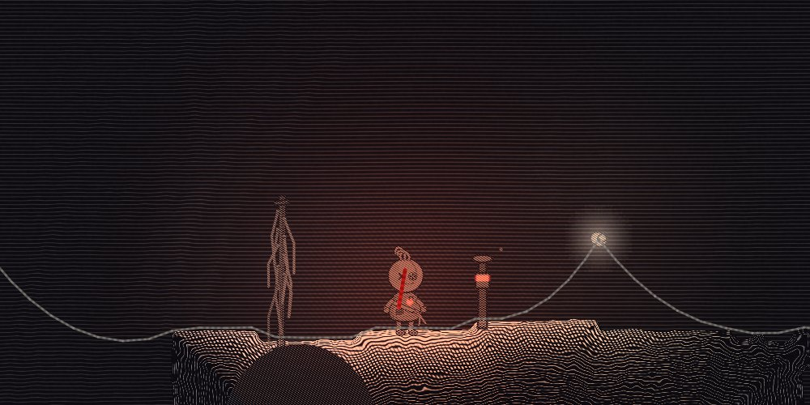
BeforeAfter
Drag the thread to compare
A great bronze bell, cracked from lip to crown and half sunk in the floor of the west ledge, with a band of worn lettering and its clapper lying beside it. Someone once hung a real bell down here.
A ribbon post on pillar two, hung with nine faded ribbons that move in the air, as if each one was left for a song people wanted answered.
A candle shrine on pillar four: melted stubs on a flat stone, most still burning, with no one around to light them. It is the one warm light in the Gallery that isn't yours.
The bell-ringer's stool, knocked over on pillar three, next to a coil of bell rope with a woollen grip.
The Ink Mere: there was a ferry
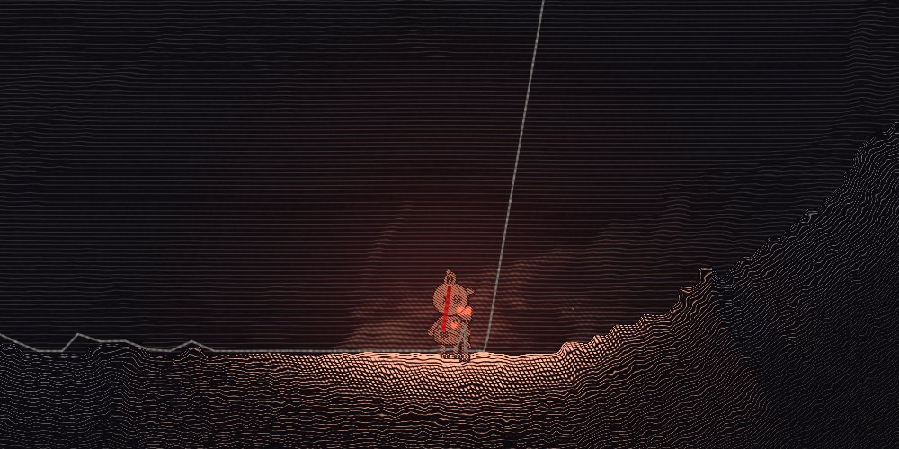
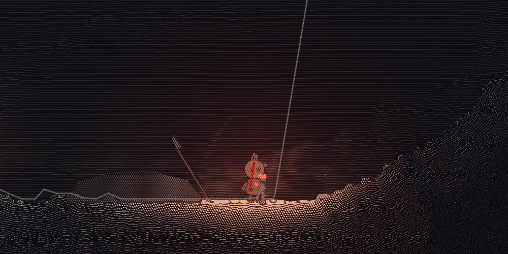
BeforeAfter
Drag the thread to compare
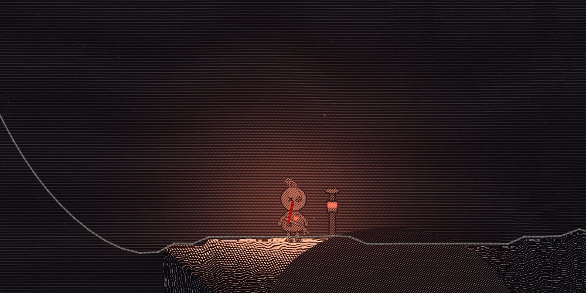
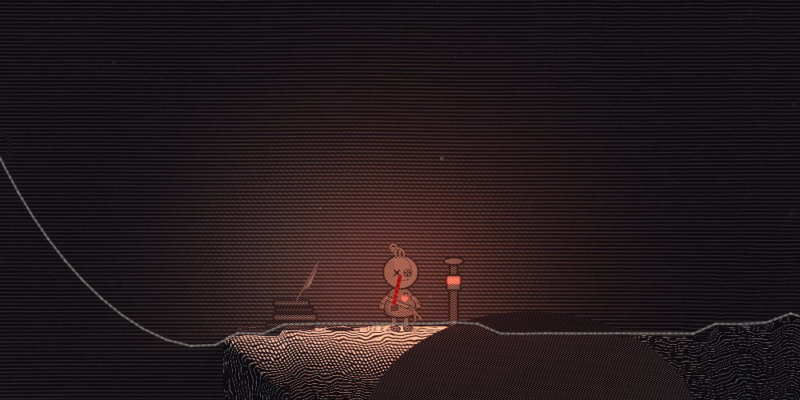
BeforeAfter
Drag the thread to compare
A rowboat pulled up on the east shore and turned keel-up, with a stove-in plank and an oar leaning on it, and a mooring post at the water's edge with its rope trailing into the ink.
The ferry lamp on island four: a leaning pole with an unlit lantern swinging from its arm, and a slack rope from the old ferry line.
A stack of ink-blackened books and loose letters on island three, with a quill stuck in the top one and ink spreading from under the pile. The ink makes things forget, and here someone was trying to write things down.
A signpost on the west shore with a carved wooden hand pointing down the tunnel to the Loom.
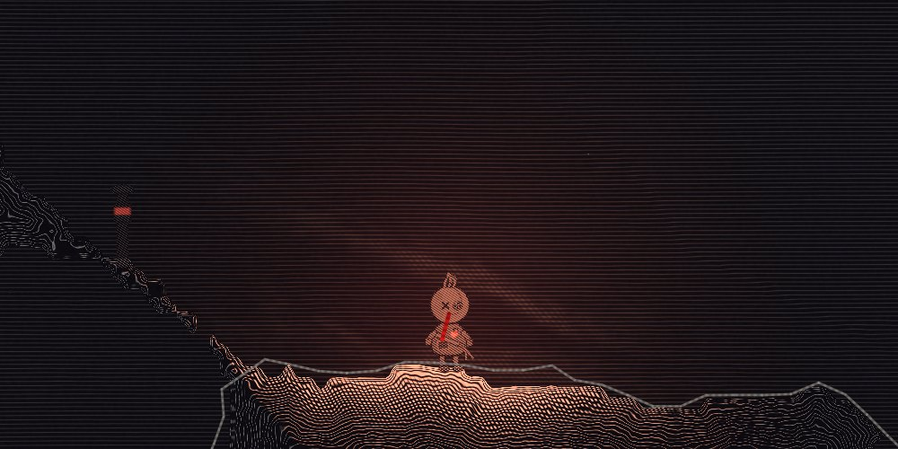
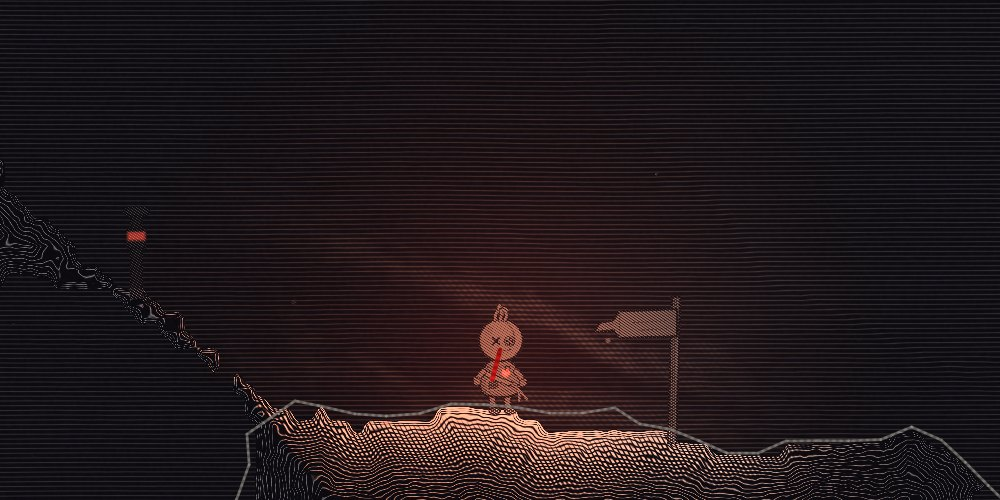
BeforeAfter
Drag the thread to compare
The Loom
Two baskets of grey yarn and a couple of dropped spindles sit near the floor of the Loom. I kept this area light on purpose, so nothing competes with what happens there.
Where it is
All twenty objects are in one list, LORE at the top of app/src/props.js: a kind, a position, and which way it faces. Each one snaps to the real rock floor when the game loads, and a check confirmed none of them end up inside rock or floating.
Moving one is a one-number change. Adding one means writing a small drawing function next to the others.